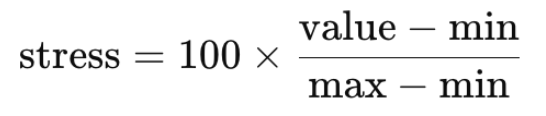

Stress in high-stakes situations like exams is a common experience, yet most studies on the body's stress response rely on artificial lab stimuli rather than real-world scenarios.
A study conducted by Md Rafiul Amin, Dilranjan S. Wickramasuriya, and Rose T. Faghih[Link] aimed to investigate physiological stress responses in real-world academic settings. Unlike traditional stress studies that rely on artificial stimuli, this research focused on capturing real-time physiological data from students as they underwent midterm and final exams.
Students were asked to wear the Empatica E4 wristband while they take their midterm 1&2 and final exams. The study recorded 6 health features during 3 exams for each student(10 students) and we focused on the following 4 features:
Along with these 4 features, a new feature 🧠Stress was created that would track overall student stress felt during an exam.This was created by using the heart rate, blood volume pulse, and skin surface temperature features. Using the individual average student data per min datasets, each feature value was normalized using the global max/min values:
